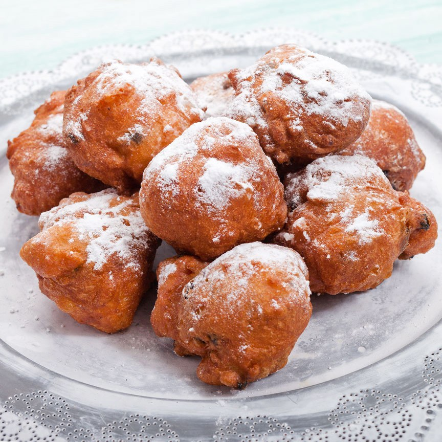

Oliebollen Recipe
Ingredients:
- 2 cups all-purpose flour
- 1 ½ teaspoons active dry yeast
- 1 cup lukewarm milk
- 2 tablespoons granulated sugar
- 1 teaspoon salt
- 1 egg
- 1 teaspoon vanilla extract
- 1 apple, peeled and diced
- 1/2 cup raisins
- Oil, for frying
- Powdered sugar, for dusting
`

How to make Oliebollen
-
In a small bowl, dissolve the yeast and sugar in lukewarm milk. Let it sit for about 5 minutes until it becomes frothy.
-
In a large mixing bowl, combine the flour and salt. Make a well in the center and pour in the yeast mixture. Mix it well until you have a smooth batter.
-
Add the egg and vanilla extract to the batter, and continue mixing until well combined.
-
Fold in the diced apple and raisins into the batter. Stir gently until they are evenly distributed.
-
Cover the bowl with a clean kitchen towel and let the batter rise in a warm place for about 1 hour or until it has doubled in size.
-
Heat oil in a deep fryer or a large, deep pot to about 350°F (180°C).
-
Using a spoon or a small ice cream scoop, carefully drop portions of the batter into the hot oil. Fry them in batches, making sure not to overcrowd the pot.
-
Cook the oliebollen for about 4-5 minutes, flipping them occasionally, until they turn golden brown and cooked through.
-
Using a slotted spoon, remove the oliebollen from the oil and transfer them to a plate lined with paper towels to drain the excess oil.
-
Repeat the frying process with the remaining batter until all the oliebollen are cooked.
-
Once the oliebollen have cooled slightly, dust them generously with powdered sugar.
Enjoy!